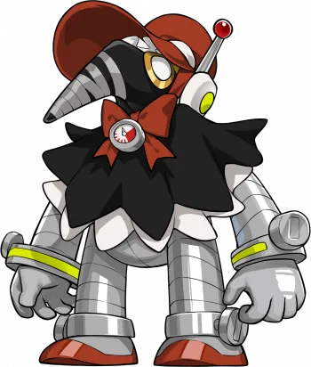

怪物官方原文 ↗人工生命体-噩兆怪诞！无需多言！编号1038地图幽魂暗巷 <!--尺寸350数值（攻击 / 防御 / 生命）难度攻击防御生命星币普通42268困难42298噩梦53308疯狂63338技能主动技能｜连锁反应（冷却 2）：使所有被【改造】的玩家失去2点生命值，自己恢复等量生命值。被动技能｜保护机制：被击倒后，移除科学怪人1层【深度改造】。机制1. 会主动攻击。 2. 可以反击。 3. 被击倒后会被科学怪人复活，并变得更加强大！机制标签主动攻击,会反击,使用技能,技能伤害相关内容幽魂暗巷地图星趴怪物图鉴图鉴Z3000角色